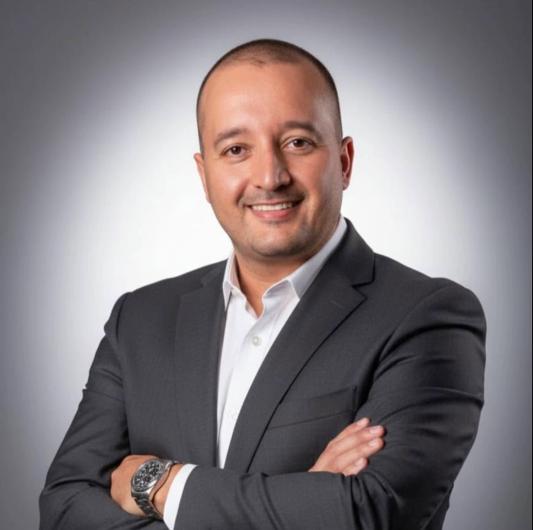
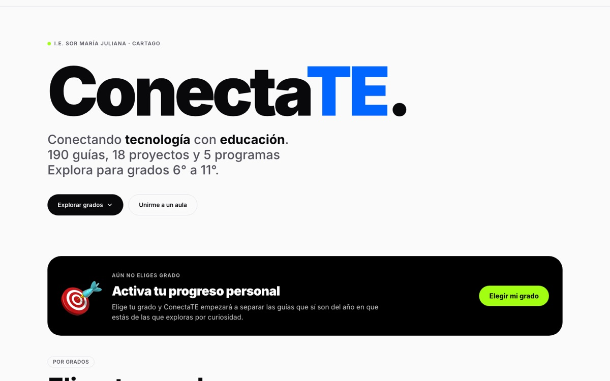
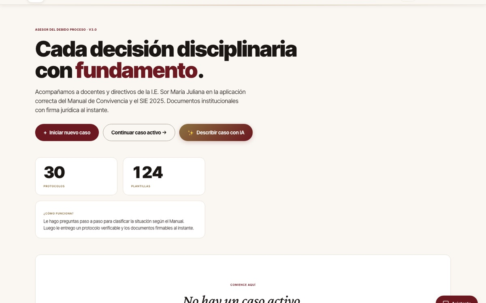
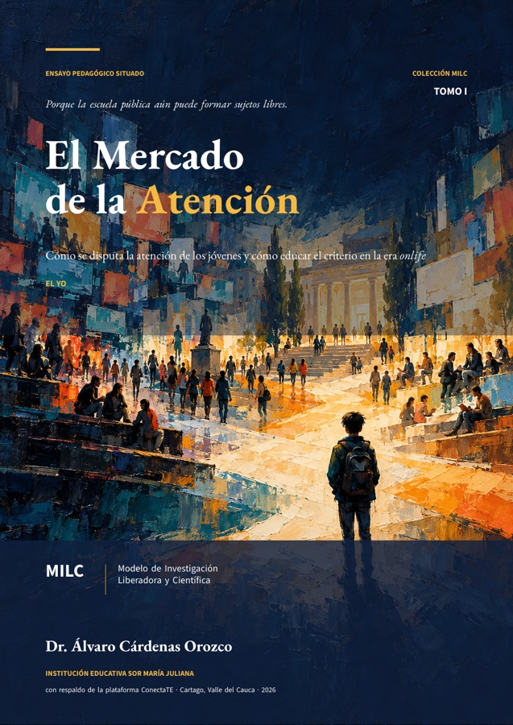
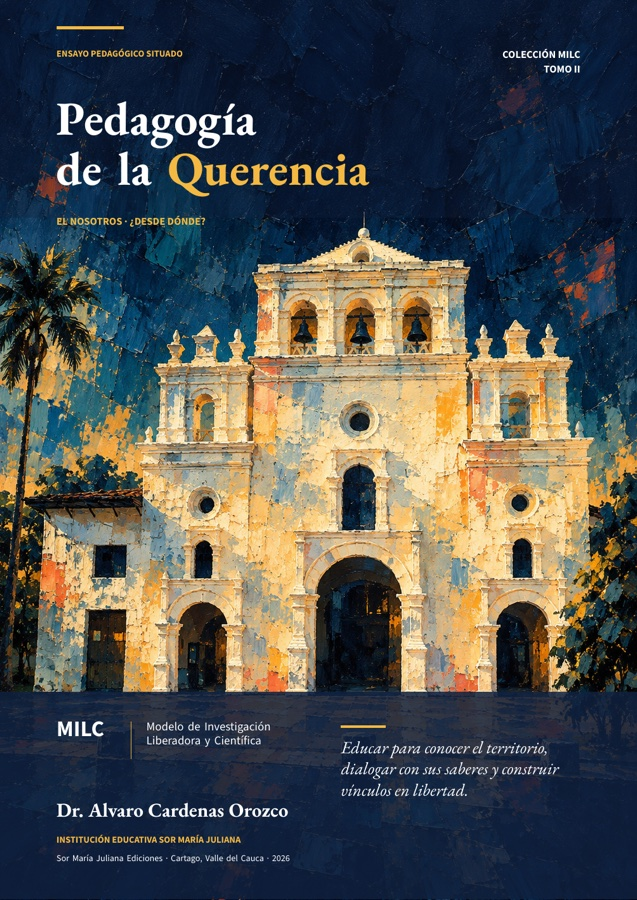
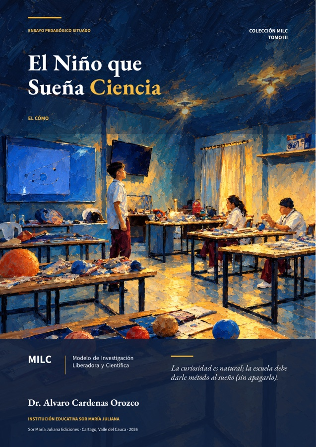
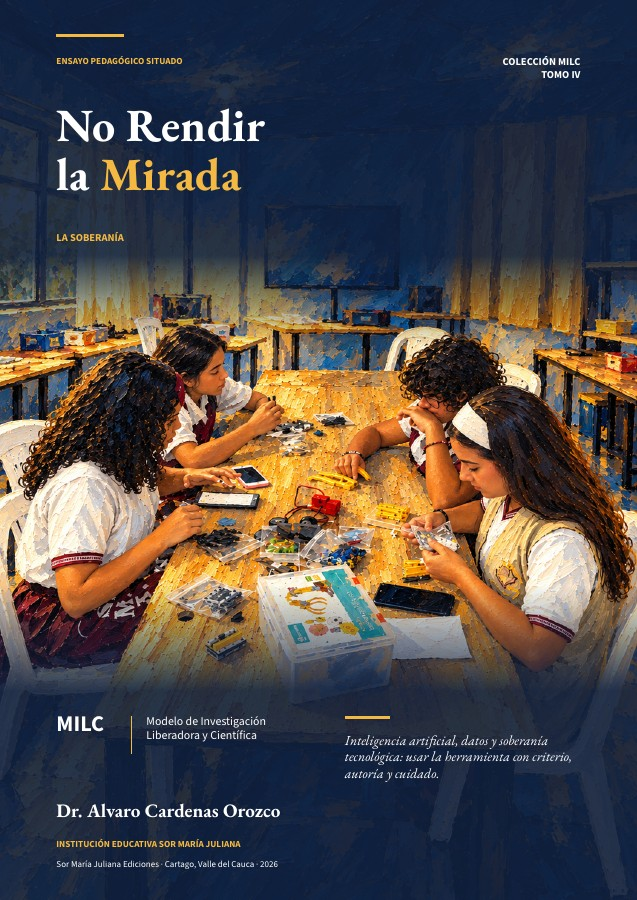
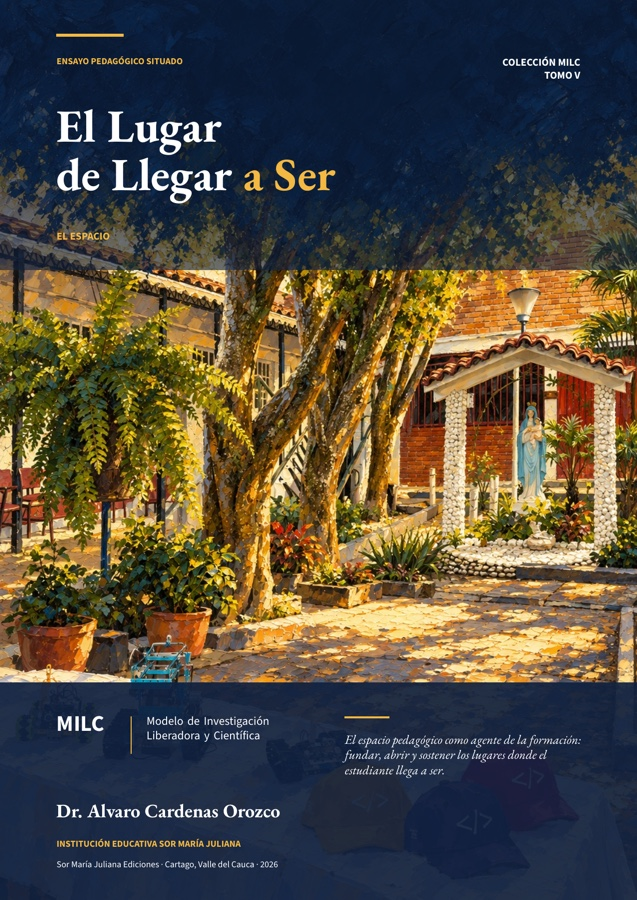
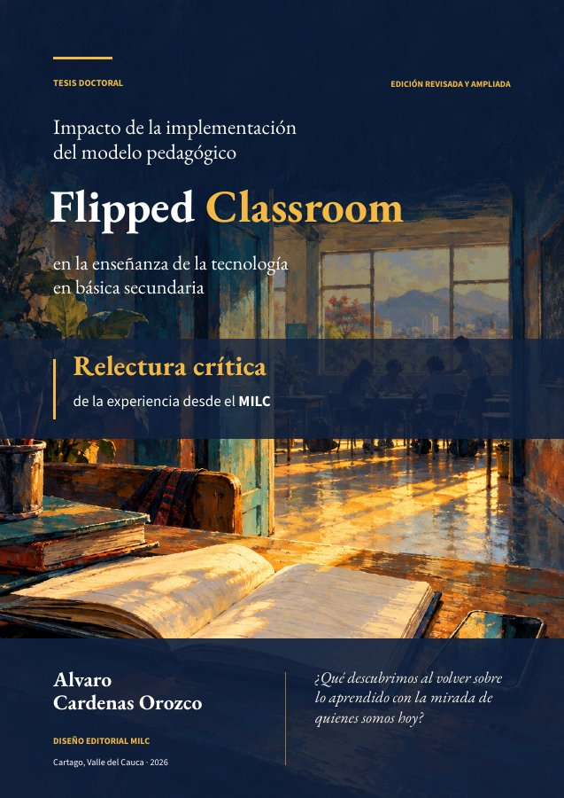

Programa institucional de IA con criterio
Acuerdos comunes, formación docente y acompañamiento para usar la IA sin que piense por los estudiantes.
- Diagnóstico del uso actual
- Política institucional de IA
- Formación docente
- Seguimiento por semestre
Ingeniero de Sistemas y Doctor en Ciencias de la Educación. Investigo el problema, diseño la solución y construyo la tecnología que la lleva al aula y a la institución.

Combino educación, investigación e ingeniería para resolver problemas educativos complejos.
Formación docente, acuerdos de uso y prácticas de aula para incorporar la IA con criterio pedagógico, sin que piense por los estudiantes.
Ver el caso de formación docentePlan de área, guías, proyectos y exámenes que salen de una misma fuente, para que el documento rector y la clase no se contradigan.
Ver el caso del currículoPlataformas, automatizaciones y asistentes que ordenan el trabajo repetitivo y dejan el tiempo para enseñar.
Ver el caso de ConciencIAProyectos que he liderado, diseñado, desarrollado o acompañado, de la idea a su uso. Ver los 13 casos · Ver la galería de diseño

Currículo y plataformaConectaTE180 guías, exámenes y proyectos para 6.º a 11.º, con cuentas e informes a las familias.
IA y procesos institucionalesConciencIAEl debido proceso escolar paso a paso: 30 protocolos y 124 documentos que se llenan solos. Modelo pedagógicoMILCUn modelo de investigación escolar publicado en seis libros con DOI y un artículo arbitrado.
Modelo pedagógicoMILCUn modelo de investigación escolar publicado en seis libros con DOI y un artículo arbitrado.
años en el aula, de básica secundaria a posgrado
plataformas y aplicaciones educativas publicadas
proyectos de semilleros presentados en convocatorias regionales y nacionales
libros con DOI y un artículo arbitrado sobre el modelo MILC
proyectos de sus semilleros entre los mejores del país en tres convocatorias; dos llegaron al top 50.
Para colegios privados, universidades, fundaciones y organizaciones. Cada una incluye diagnóstico, implementación, formación y seguimiento, y se cotiza según el diagnóstico.
Acuerdos comunes, formación docente y acompañamiento para usar la IA sin que piense por los estudiantes.
Un currículo que llega al aula y semilleros que investigan con método.
Una plataforma propia que funciona sin conexión y documentos que se generan solos.
Revistas, informes y libros con identidad propia y DOI, y una comunidad que escribe.
La Colección MILC propone un modelo de investigación liberadora y científica para la escuela pública. La obra matriz, en su versión 3.0, se publica en dos volúmenes: el libro y el Cuaderno de trabajo MILC.
Conocer el modelo MILC Recursos abiertos Leer la colección en Zenodo
Obra matriz
Educación en la Era Onlife

Tomo I El Mercado de la Atención
Tomo II Pedagogía de la Querencia
Tomo III El Niño que Sueña Ciencia
Tomo IV No Rendir la Mirada
Tomo V El Lugar de Llegar a Ser
Tesis doctoral Impacto de la implementación del modelo pedagógico Flipped Classroom en la enseñanza de la tecnología en básica secundariaIdeas y métodos del aula y del taller.
Ver todos los artículos ConferenciasUn país que aumenta su presupuesto, pero ¿está invirtiendo en su futuro?El presupuesto de Mineducación para 2027 crece, pero su inversión cae. Qué significa para la escuela pública, las universidades, los docentes y el PAE.20 de octubre de 2026 · 15 min · lecturas
ConferenciasUn país que aumenta su presupuesto, pero ¿está invirtiendo en su futuro?El presupuesto de Mineducación para 2027 crece, pero su inversión cae. Qué significa para la escuela pública, las universidades, los docentes y el PAE.20 de octubre de 2026 · 15 min · lecturas ConferenciasDel aula al territorio: tres reflexiones antes de una conferenciaTres reflexiones antes de mi conferencia en la Normal de Cartago: decidir en el aula con evidencia, sentido y territorio, y el modelo MILC.18 de octubre de 2026 · 13 min · lecturas
ConferenciasDel aula al territorio: tres reflexiones antes de una conferenciaTres reflexiones antes de mi conferencia en la Normal de Cartago: decidir en el aula con evidencia, sentido y territorio, y el modelo MILC.18 de octubre de 2026 · 13 min · lecturas Diseño editorialCosmoTec: una revista escolar para que la escuela escriba, investigue y publiqueQué fue el primer número de CosmoTec y por qué una revista escolar impulsa la escritura, la investigación y la producción académica de toda la institución.11 de octubre de 2026 · 5 min · lecturas
Diseño editorialCosmoTec: una revista escolar para que la escuela escriba, investigue y publiqueQué fue el primer número de CosmoTec y por qué una revista escolar impulsa la escritura, la investigación y la producción académica de toda la institución.11 de octubre de 2026 · 5 min · lecturasColegas, estudiantes y directivas con quienes he trabajado.
“El profesor Alvaro Cardenas es un docente preocupado por la innovación y por los procesos pedagógicos y didácticos que incorporan las tecnologías de la información y la comunicación. Ha consolidado un quehacer nutrido de herramientas y procedimientos fundamentados que les permite a estudiantes, docentes y comunidad apropiarlas e incorporarlas en su propio quehacer.”
“Excelente en todo lo que hace. Enseña con pasión y serenidad, y deja muchos aprendizajes y herramientas TIC para usar en el aula de clases.”
“Sin su liderazgo, no seríamos nodo de pensamiento computacional.”
“Los talleres y proyectos nos enfrentan con la realidad.”
“Que el profe nos escucha.”
“El profe es muy amable y nos motiva.”
en Ciencias de la Educación, título convalidado por el MEN.
de Colombia Programa, MinTIC y British Council, 2024-2026.
Docente de la Universidad Tecnológica de Pereira desde 2018 e integrante de su grupo de investigación Robótica Aplicada desde 2026.
Campañas de ciencia ciudadana de búsqueda de asteroides, aliadas de la NASA, con estudiantes, 2021-2026.
Ingeniero de Sistemas y Computación, magíster en Gestión de la Tecnología Educativa y doctor en Ciencias de la Educación. Combina educación, investigación e ingeniería para resolver problemas educativos: diseña currículos, forma docentes y construye las plataformas que los sostienen. Desde Cartago (Valle del Cauca) enseña Tecnología e Informática en la I.E. Sor María Juliana y es docente de posgrado en la Universidad Tecnológica de Pereira, donde también forma docentes en inteligencia artificial e integra el grupo de investigación Robótica Aplicada.
¿Qué necesita resolver su institución? Elija una opción o escríbame directamente. Respondo en un plazo máximo de 24 horas.